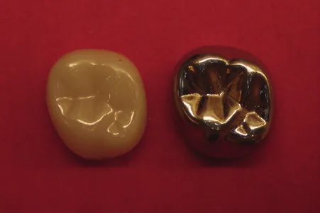

نسخه استخراجشده؛ ترجمه یا تأیید علمی انجام نشده است. وضعیت: captured
بازسازی پس از درمان پالپ باید دو نیاز جداگانه را همزمان برآورده کند:
۱. سیل شدن — تا باکتری به بافت باقیمانده یا مادهی کانال نرسد. شکست در این نیاز، درمان پالپ را از داخل بیاثر میکند.
۲. استحکام — تاجی که پوسیدگی وسیع و تراش دسترسی را تحمل کرده، ضعیف است و زیر نیروی جویدن میشکند.
یک ترمیم مستقیم بزرگ ممکن است نیاز اول را برآورده کند ولی در نیاز دوم شکست بخورد — و شکستگی کاسپ، سیل شدن را هم از بین میبرد.
در مولر شیریِ درمانپالپشده، روکش استیل انتخاب پیشفرض است: کاسپها را میپوشاند، سیل محیطی میسازد، و تا زمان افتادن طبیعی دندان دوام میآورد.
ترمیم مستقیم فقط وقتی کافی است که ساختار تاجی باقیمانده زیاد و دیوارهها سالم باشند — وضعیتی که پس از پالپکتومی کمتر پیش میآید.
در دندان قدامی شیری، روکشهای زیبایی مانند استریپ کراون یا روکش زیرکونیا کاربرد دارند.
قاعده: هرچه بافت باقیمانده کمتر و درمان پالپ گستردهتر، نیاز به بازسازی پوشاننده بیشتر.

نوع سؤال: ساخت کلمه · 4 خانه
حروف منبع: ک · ر · ت · م
نوع سؤال: ساخت کلمه · 3 خانه
حروف منبع: ل · ی · س